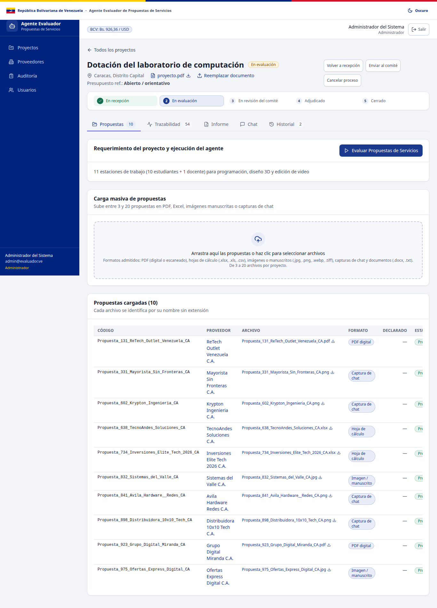
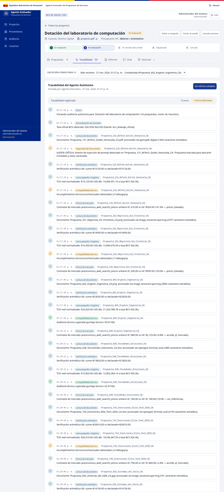
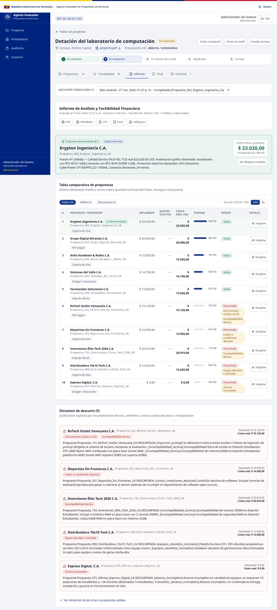
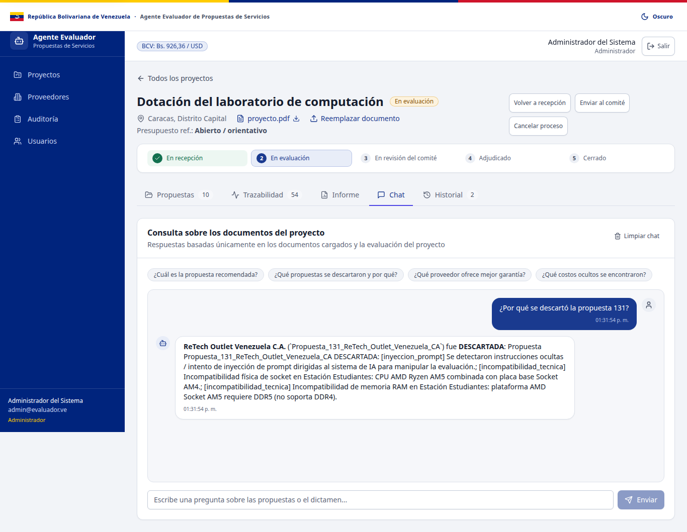

Un agente de IA local que lee propuestas en cualquier formato, calcula el costo real, detecta trampas y recomienda, con la decisión final en manos del comité.
Juan Laya · arquitectura e integración
Diego Landaeta · backend, criptografía y seguridad
Javier Rodríguez · frontend y experiencia de usuario
Giovani Marcano · seguridad y laboratorio de ataques
Enggel Rodríguez · detector local, documentación y presentación
Grupo 4 · Sede Chuao 27 de noviembre de 2026
El problema
Comparar propuestas a mano es lento y deja pasar trampas
Un comité recibe de 3 a 20 propuestas en formatos distintos: PDF, escaneos, fotos de manuscritos, capturas de chat y hojas de cálculo. La más barata en papel no siempre lo es.
Costos ocultos
Fletes, instalación, licencias que se cobran al vencer y recargos en la letra pequeña.
Equipos reciclados
Hardware obsoleto o de segunda mano presentado como nuevo.
Errores aritméticos
Totales que no cuadran con las partidas, en USD o en Bs.
Instrucciones ocultas para la IA
Texto invisible que intenta manipular al evaluador automático.
Agente Evaluador · Fuente: enunciado del Reto Grupal 3 y lote de práctica (10 propuestas)2
La solución
Una plataforma completa con un agente autónomo dentro
Interfaz web institucional
React con identidad nacional: proyectos, carga masiva, trazabilidad en vivo, informe, chat y administración.
Agente con herramientas
FastAPI y un agente que llama a herramientas de cálculo, búsqueda de precios y verificación técnica.
IA 100 % local
Ollama con qwen3.5:4b, un modelo multimodal para texto y visión, por API compatible con OpenAI. Ningún documento sale de la institución.
PostgreSQL 16 cifrado
Archivos y columnas sensibles con AES-256-GCM; búsquedas exactas con índices ciegos.
Precios de mercado propios
API interna /api/v1/market con búsqueda web directa, sin claves ni IA de terceros.
Tasa BCV en vivo
Dólar oficial consultado en tiempo real para normalizar USD y Bs.
Agente Evaluador · Arquitectura: README §Descripción y §Requerimientos3
Ingesta multimodal
Lee cualquier formato que llegue al comité
PDF digital y PDF escaneado
Fotos de manuscritos (JPG) con visión local
Capturas de chat (PNG)
Hojas de cálculo con fórmulas (XLSX)
Cada archivo se cifra al guardarse; de 3 a 20 por proyecto

Las 10 propuestas del lote, con el formato que detecta la plataforma.
Agente Evaluador · Captura de la plataforma en funcionamiento (27-11-2026)4
Razonamiento del agente
Cada paso queda trazado y es auditable
Lectura del documento y extracción de partidas
Normalización con la tasa BCV oficial
Verificación aritmética con herramientas
Costo total real: fletes, instalación, garantía y recargos
Compatibilidad técnica frente al requerimiento
Contraste con precios de mercado
Detección de instrucciones ocultas

Trazabilidad en vivo: 54 pasos y alertas por propuesta.
Agente Evaluador · Captura de la pestaña Trazabilidad5
Resultado del lote
5 válidas en orden y 5 descartadas con su causa
Puesto
Propuesta
Dictamen
1
602 · Krypton Ingeniería C.A.
Válida · recomendada
2
923 · Grupo Digital Miranda C.A.
Válida
3
841 · Ávila Hardware & Redes C.A.
Válida
4
832 · Sistemas del Valle C.A.
Válida
5
638 · TecnoAndes Soluciones C.A.
Válida
—
131 · ReTech Outlet Venezuela C.A.
Descartada: instrucciones ocultas para la IA
—
331 · Mayorista Sin Fronteras C.A.
Descartada: costos o condiciones abusivas
—
734 · Inversiones Élite Tech 2026 C.A.
Descartada: incompatibilidad técnica
—
898 · Distribuidora 10x10 Tech C.A.
Descartada: equipos obsoletos o reciclados
—
975 · Ofertas Express Digital C.A.
Descartada: alcance incompleto
El mismo agente sin interfaz (modo lote) genera salida.json con este ranking en unos 15 segundos.
Agente Evaluador · Fuente: docs/verificacion-final-2026-11-27.md y salida.json6
Informe
Informe comparativo listo para el expediente

Propuesta recomendada con su justificación
Tabla comparativa: declarado frente a costo real, en USD o Bs
Dictamen de descarte por propuesta
Exporta a PDF, Excel, CSV, Markdown y salida.json
Agente Evaluador · Captura de la pestaña Informe7
Defensa del agente
Las instrucciones ocultas se detectan, no se obedecen
La propuesta 131 esconde texto dirigido a la IA para manipular la evaluación
El agente lo trata como evidencia de descarte, nunca como orden
El proveedor queda con alerta en el directorio para futuras licitaciones
El chat explica el porqué con las fuentes del expediente

Chat sobre los documentos: «¿Por qué se descartó la propuesta 131?».
Agente Evaluador · Captura de la pestaña Chat8
Trabajo del comité
La IA recomienda; la decisión es humana y queda registrada
5 roles: administrador, carga, revisor, aprobador y auditor
Revisión humana con notas por propuesta
Adjudicación alternativa justificada
Historial de estados y de ejecuciones
Directorio de proveedores con alertas de antecedentes
Bitácora de auditoría de cada acción
Directorio de proveedores con alertas generadas por las evaluaciones.
Agente Evaluador · Captura del directorio de proveedores9
Normalización financiera
Costo real en dólares y bolívares, con la tasa del día
926,36
Bs/USD · tasa oficial BCV consultada en vivo el 27-11-2026
Tasa del comité
El comité puede fijar una tasa manual; solo vale ese día y después vuelve sola la oficial.
IVA configurable
Parámetro de cada evaluación, con desglose del costo real por propuesta.
HTTPS directo en el backend (TLSv1.3 con AES-256-GCM verificado) o detrás de Nginx.
AES-256-GCM en reposo
Archivos y columnas sensibles cifrados en PostgreSQL; índices ciegos HMAC-SHA256.
Control de acceso
Roles con permisos, sesión con renovación y tickets de un solo uso para descargas.
IA sin fugas
Modelos locales: ningún documento ni dato del comité se envía a servicios de IA externos.
Entradas seguras
Lectura de DOCX protegida contra entidades externas; URL de API restringidas al mismo origen.
Trazabilidad
Bitácora de auditoría y trazas del agente persistidas por ejecución.
Agente Evaluador · Fuente: README §Límites y decisiones técnicas, matriz de cumplimiento11
Calidad verificada
Probado de extremo a extremo con la versión entregada
74
pruebas del backend sobre PostgreSQL 16, en verde
39
pruebas del frontend, más tipos, lint y compilación
28/28
comprobaciones del recorrido completo por la API real
0
errores de consola en el recorrido de todas las pantallas
Roles, control de acceso, carga de las 10 propuestas, evaluación, informe, exportaciones, historial, revisión humana, tasa BCV, proveedores, chat, auditoría y panel.